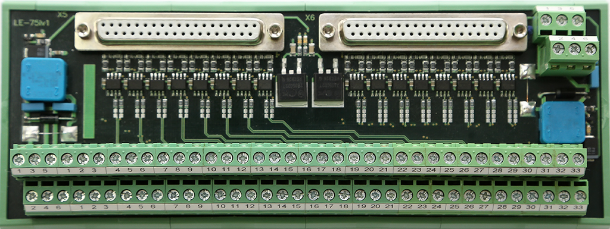
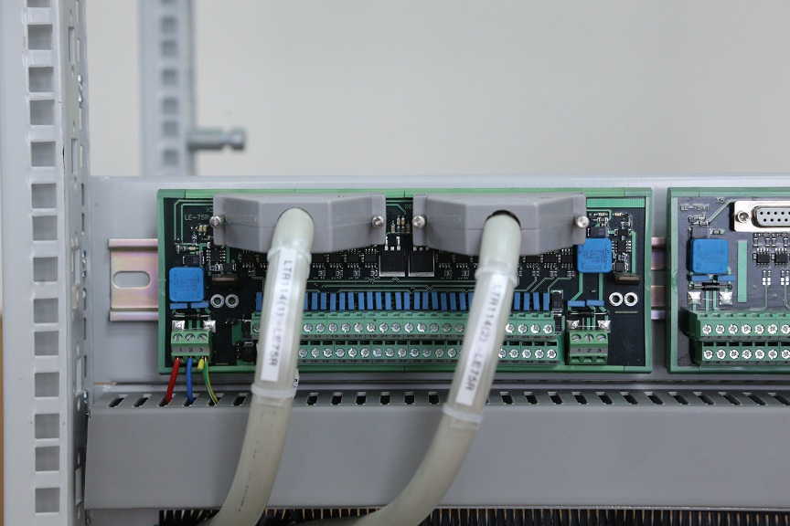
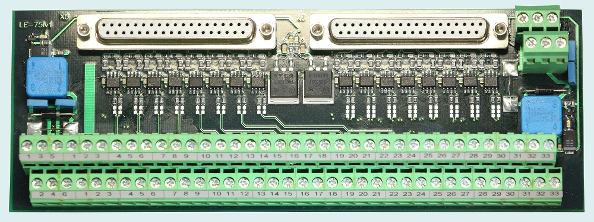
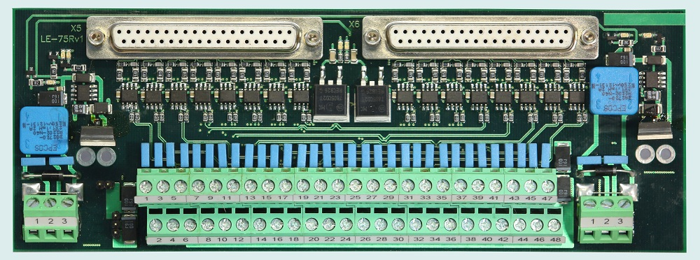
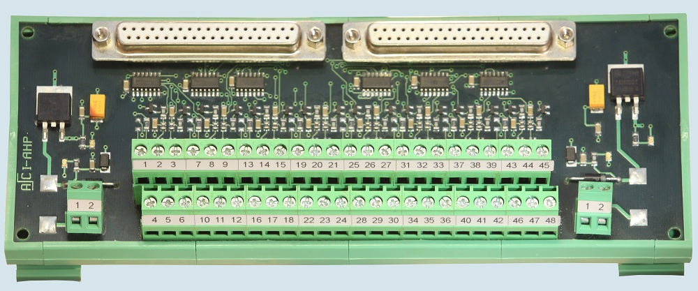
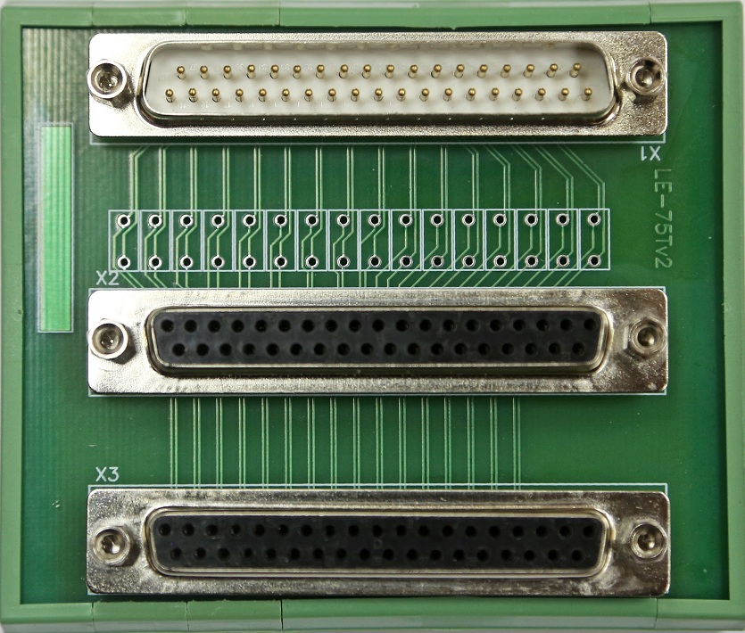

Устройства согласования и дублированного подключения сигналов LE-75 выполнены в виде печатных плат в специальном открытом контейнере для крепления на DIN рейку, имеют два выходных разъема типа DB-36F и дополнительно могут комплектоваться кабелями для подключения к основному и дублирующему модулям АЦП, например кабелями DB-37M-DB-37F для подключения к модулям LTR (тип кабеля и его длина уточняются при оформлении заказа). Для подключения датчиков все устройства согласования и дублированного подключения LE-75 (кроме LE-75Т) имеют входные клеммные разъемы типа EEHK508V-06 (устройство LE-75Т имеет входной разъем типа DB-37M).
Все устройства LE-75 (кроме LE-75Т) это ‘активные’ электронные устройства, имеющие два клеммных разъема для подключения дублированного питания от двух внешних стабилизированных источников питания, основного и дублирующего. При отсутствии требования дублированного подключения сигналов и резервирования питания устройства LE-75 могут применяться для согласования и удаленного подключения сигналов к одному модулю АЦП и запитываться только от одного внешнего источника питания. устройство согласования и дублированного подключения сигналов LE-75U - универсальное устройство для согласованного дублированного подключения датчиков с выходами по напряжению к двум универсальным модулям АЦП, основному и дублирующему (например к модулям LTR11 или LTR114). Устройство согласования и дублированного подключения сигналов LE-75I предназначено для преобразования сигналов 0…20 мА в сигналы напряжения 0…2 В, их разделения и буферизации для дальнейшего подключения к основному и дублирующему модулю АЦП. Устройство LE-75I так же может применяться с относительно недорогими многоканальными модулями АЦП, например модулями LTR11 или LTR114 крейтовой системы LTR.
Устройство имеет 16 входных каналов, на каждом входном канале стоит прецизионный токонагрузочный резистор с сопротивлением 100 Ом 0.1% 10 ppm. Сигнал с токонагрузочного резистора (напряжение 0…2 В), в свою очередь, поступает на два буферных усилителя с Ку=1, основной и дублирующий. Таким образом производится раздвоение и буферизация сигналов и обеспечивается работоспособность одного из входов АЦП при любом возможном функциональном состоянии или неисправности второго, дублирующего входа АЦП. Токовое подключение является наиболее помехоустойчивым и применяется в системах автоматизации технологических процессов для подключения датчиков работающих в жестких условиях индустриальных помех. Устройство согласования и дублированного подключения сигналов LE-75Rr предназначено для согласованного буферизированного подключения термометров сопротивления к одному или одновременно к двум шестнадцатиканальным модулям АЦП с входами по напряжению, в том числе к мультиплексированным АЦП, например к модулям LTR11.
Устройство согласования и дублированного подключения сигналов LE-75Rr имеет восемь входных каналов для четырехпроводного подключения термометров сопротивления. Для дублированного питания подключаемых датчиков (терморезисторов) на плате устройства LE-75Rr имеется два источника опорного напряжения 4,5 В (ИОН1 и ИОН2). Сигналы тока в цепи каждого подключаемого термосопротивления и сигналы напряжения на клеммах этих термосопротивлений подаются на четыре буферных усилителя с Ку=1, два основных усилителя и два дублирующих. Устройство согласования и дублированного подключения сигналов LE-75Rp предназначено для дублированного подключения потенциометрических датчиков к двум устройствам сбора данных – двум шестнадцатиканальным модулям АЦП с входами по напряжению, основному и дублирующему. Устройство LE-75Rp имеет 8 входных каналов для подключения потенциометрических датчиков, с номинальным значением сопротивления от 700 Ом до 5 кОм, по шестипроводной схеме. Для питания подключаемых датчиков (потенциометров) на плате устройства LE-75Rp имеется два источника опорного напряжения 4,5 В. Сигналы от каждого подключаемого потенциометра подаются на четыре буферных усилителя с Ку=1, два основных усилителя и два дублирующих. Выходы усилителей, в свою очередь, выводятся на два внешних разъема DB37F для подключения двух, не зависимых друг от друга, модулей АЦП, основного и дублирующего. Устройство согласования сигналов I-AHP3 предназначено для разделения и гальваноизолированного подключения 16 дискретных датчиков, типа ‘сухой контакт’, одновременно к двум независимым регистраторам сигналов.
Дискретные сигналы 24В от датчиков типа ‘сухой контакт’ подключаются к входным разъемам устройства (клеммным колодкам типа EEHK508V-06). Каждый канал состоит из транзисторной оптопары, фильтра и буферного элемента с триггером Шмидта на входе. При замыкании контактов датчиков, изменяется логический уровень на выходе буферного элемента. Выходы буферных элементов выведены на два внешних разъема типа DB37F для подключения к двум внешним независимым устройствам сбора данных, например к модулю LTR43 крейтовой системы LTR. Устройство дублированного подключения сигналов LE-75T предназначено для подключения сигналов термопар к основному и дублирующему модулям АЦП с параллельными входными каналами, например к модулю LTR27 с субмодулями H-27T.
В отличие от всех остальных, LE-75T это относительно недорогое ‘пассивное’ коммутационное устройство, которое может применяться для подключения источников медленно переменных сигналов к одному или двум модулям АЦП с параллельными входными каналами. Устройство имеет 16 входов с подключением через входной разъем DB37M и 32 выхода, выведенных на два разъема DB37F для подключения к основному и дублирующему модулю АЦП с параллельными входными каналами.